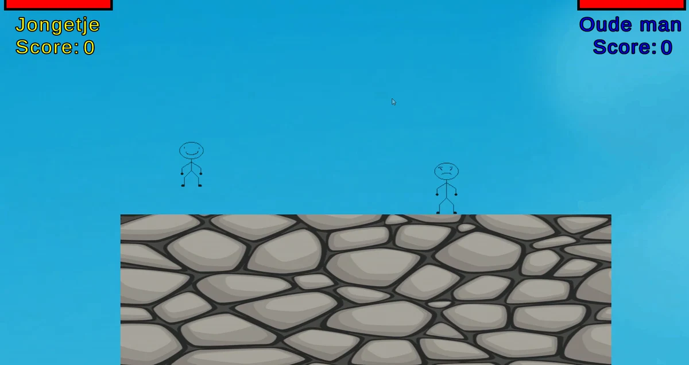
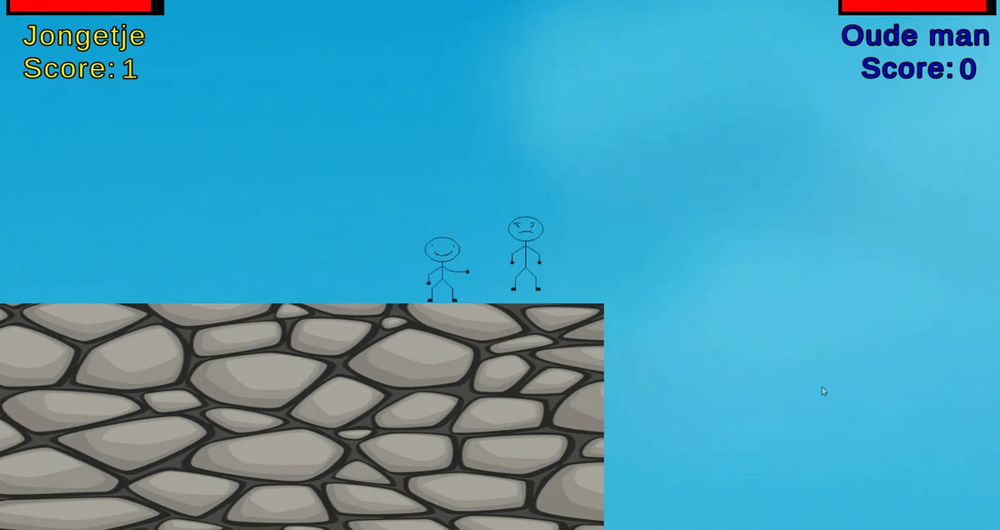
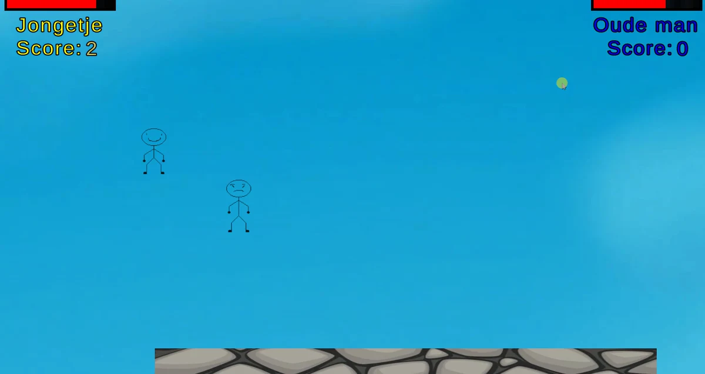

Old Vs Young: The Fighting Game
A 2D platform fighter with two playable characters: a young fighter and an old fighter. Each has different moves and stats. The game combines platform movement with head-to-head combat.
- Engine
- Unity 6 (6000.2.2f1)
- Language
- C#
- Development period
- 12 Nov 2025 – 1 Sep 2026
- Development span
- About 9½ months
The dates show my first and latest recorded commits.
How it plays
The young and old fighters have different attacks and stats, so spacing and timing matter. Jump over an opponent, choose an attack direction and use knockback to push them toward the edge. Holding jump adds height, and fast fall lets you get back to the platform sooner.
Images






Gameplay clips
C# examples
Attack knockback
Upward attacks send the opponent up, while other attacks push them away.
if (Keyboard.current.wKey.isPressed)
knockDir = new Vector2(0, 1).normalized;
else
knockDir = new Vector2(direction, 0.5f).normalized;
float knockForce = GetCurrentAttackKnockback();
enemyRb.AddForce(knockDir * knockForce, ForceMode2D.Impulse);Variable jump height
Holding jump adds a little upward velocity while the fighter is already rising. The extra lift stops once they begin falling.
if (Keyboard.current.wKey.isPressed && !isGrounded && rb.linearVelocity.y > 0)
rb.linearVelocity += Vector2.up * extraJumpForce * Time.deltaTime;Attack hitbox timing
The chosen hitboxes are active for the duration of the attack, then turned off. This gives each attack a limited window to connect.
foreach (BoxCollider2D box in chosenAttack.hitboxes)
if (box != null) box.enabled = true;
yield return new WaitForSeconds(attack.attackDuration);
foreach (BoxCollider2D box in chosenAttack.hitboxes)
if (box != null) box.enabled = false;